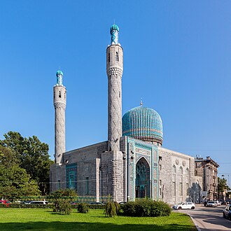

Presentación
La mosquée cathédrale de Saint-Pétersbourg, fut construite en 1913. Ses minarets atteignent 48 mètres de haut, et son dôme 39 mètres. Elle est située dans le centre-ville de Saint-Pétersbourg, non loin de la forteresse Pierre-et-Paul et peut accueillir jusqu'à cinq mille fidèles.
مسجد سانت بطرسبرغ ، عندما افتتح في سنة 1913، كان المسجد الأكبر في أوروبا، حيث يصل ارتفاع مآذنه إلى 49 متر وتعلوه القبّة الرائعة التي يبلغ ارتفاعها 39 مترا.
The Saint Petersburg Mosque, when opened in 1913, was the largest mosque in Europe outside Turkey. The mosque is situated in downtown St Petersburg. Its two minarets are 49 meters high and the dome is 39 meters high. It can accommodate up to five thousand worshippers.
Sankt-Peterburg Camii, 1913 yılında açılmış, Avrupa'nın Türkiye dışındaki en büyük camisidir. Minareleri 49 metre, kubbesi ise 39 metredir. Sankt-Peterburg şehir merkezinde yer alan camide aynı anda 5 bin kişi ibadet edebilmektedir.
Masjid Katedral Sankt-Peterburg, atau lebih dikenal dengan Masjid Sankt-Peterburg adalah sebuah kompleks masjid yang terletak di Sankt-Peterburg, Rusia. Ketika dibuka pada tahun 1913, masjid ini merupakan masjid terbesar di Eropa, di luar wilayah Turki, minaretnya setinggi 49 meter dan kubahnya setinggi 39 meter. Masjid tersebut dapat menampung 5.000 Jemaah.
سینٹ پیٹرز برگ مسجد روس کے شہر اور سابق دار الحکومت سینٹ پیٹرز برگ کی سب سے بڑی مسجد ہے۔ جب 1913ء میں اس مسجد کا افتتاح ہوا تو اس کو یورپ کی سب سے بڑی مسجد کا اعزاز حاصل ہوا تھا۔ اس کے میناروں کی بلندی 48 میٹر ہے جبکہ گنبد 39 میٹر بلند ہے۔ اس میں 5 ہزار نمازیوں کی گنجائش ہے۔
Die Sankt Petersburger Moschee ist eine 1913 eröffnete Moschee in der Innenstadt von Sankt Petersburg am Kronwerkski Prospekt.
La mezquita de San Petersburgo es una mezquita de Rusia erigida en el centro de la ciudad de San Petersburgo, la mezquita más grande de Europa a principios del siglo XX, ya que el minarete más alto de los dos que tiene alcanza los 49 metros, y su única cúpula mide 39 metros de alto. Tiene capacidad para cinco mil fieles y se puede ver su cúpula azul desde el puente de la Trinidad, al otro lado del río Nevá.
La moschea cattedrale di San Pietroburgo, quando fu inaugurata nel 1913, era la più grande moschea in Europa: la sua lunghezza è di 45 metri, la sua larghezza di 32 metri, i suoi minareti raggiungono i 48 metri di altezza e l'imponente cupola i 39 metri d'altezza.
De Moskee van Sint-Petersburg was, ten tijde van de opening in 1913, de grootste moskee in Rusland. Ze heeft minaretten van 49 meter en een koepel van 39 meter hoog. De moskee is gelegen in het centrum van Sint-Petersburg, waardoor de azuurblauwe koepel goed zichtbaar is vanaf de Troitski Most over de Neva. Het gebouw is geschikt voor maximaal vijfduizend gelovigen.
圣彼得堡清真寺 于1913年对外开放，是欧洲最大的清真寺（土耳其以外），其宣礼塔的高度为49米，穹顶高度为39米。坐落在圣彼得堡市中心，最多可容纳五千信徒。
상트페테르부르크 모스크(러시아어: Санкт-Петербургская соборная и кафедральная мечеть)는 1913년에 개장된 모스크였다. 유럽에서 가장 큰 모스크이고, 원래는 48m 높이로 지어 지기로 되어 있었지만, 39m의 높이에 가깝고 웅장한 모스크이다. 이 담청색 모스크는 상트페테르부르크 중심지에 위치하고 네바강의 트리니티 다리에서 육안으로는 보인다.
Соборная мечеть Санкт-Петербурга — исламское культовое сооружение в Санкт-Петербурге. Является памятником архитектуры, стиль северный модерн. Главная мечеть Российской империи, крупнейшая мечеть в европейской части Российской империи.
En el mapa
Documentos y enlaces
- Wikipédia — Français
- Wikipédia — العربية
- Wikipédia — English
- Wikipédia — Türkçe
- Wikipédia — Bahasa Indonesia
- Wikipédia — اردو
- Wikipédia — Deutsch
- Wikipédia — Español
- Wikipédia — Italiano
- Wikipédia — Nederlands
- Wikipédia — 中文
- Wikipédia — 한국어
- Wikipédia — Русский
- Wikidata — Q281900
Datos: Wikidata (CC0), actualizados cada 3 meses. El año es la fecha de construcción conocida más antigua del edificio: para un edificio convertido después en mezquita (como Santa Sofía), es la del edificio original. Fotos: Wikimedia Commons, autor y licencia en la página de cada foto.